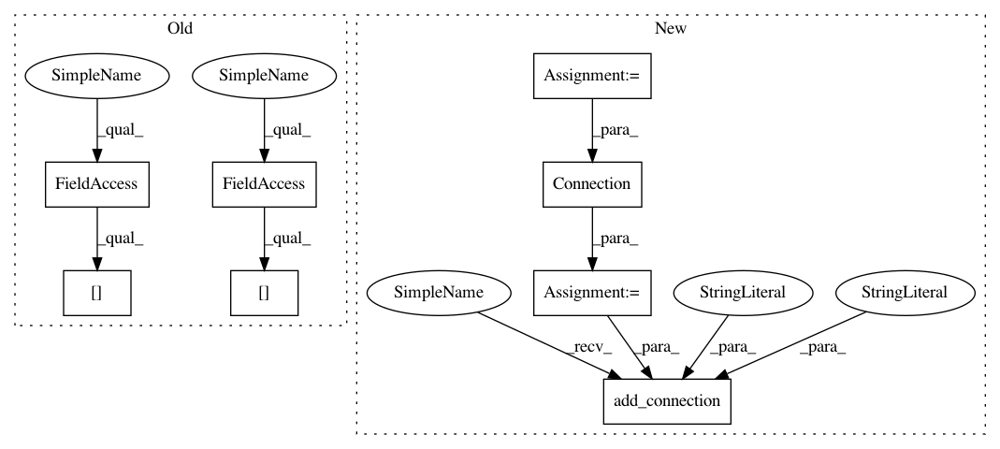

aa3b81cac2e9526d1382c5efc23f03fca3ae517c,bindsnet/models/__init__.py,DiehlAndCook2015,__init__,#DiehlAndCook2015#Any#Any#Any#Any#Any#Any#Any#Any#Any#Any#Any#,57
Before Change
source="X", target="Ae")
w = self.exc * torch.diag(torch.ones(self.n_neurons))
self.add_connection(Connection(source=self.layers["Ae"], target=self.layers["Ai"], w=w, wmin=0, wmax=self.exc),
source="Ae", target="Ai")
w = -self.inh * (torch.ones(self.n_neurons, self.n_neurons) - torch.diag(torch.ones(self.n_neurons)))
self.add_connection(Connection(source=self.layers["Ai"], target=self.layers["Ae"], w=w, wmin=-self.inh, wmax=0),
source="Ai", target="Ae")
After Change
// Layers
input_layer = Input(n=self.n_inpt, traces=True, tc_trace=20.0)
exc_layer = DiehlAndCookNodes(
n=self.n_neurons, traces=True, rest=-65.0, reset=-60.0, thresh=-52.0, refrac=5,
tc_decay=100.0, tc_trace=20.0, theta_plus=theta_plus, tc_theta_decay=tc_theta_decay
)
inh_layer = LIFNodes(
n=self.n_neurons, traces=False, rest=-60.0, reset=-45.0,
thresh=-40.0, tc_decay=10.0, refrac=2, tc_trace=20.0
)
// Connections
w = 0.3 * torch.rand(self.n_inpt, self.n_neurons)
input_exc_conn = Connection(
source=input_layer, target=exc_layer, w=w, update_rule=PostPre,
nu=nu, wmin=wmin, wmax=wmax, norm=norm
)
w = self.exc * torch.diag(torch.ones(self.n_neurons))
exc_inh_conn = Connection(source=exc_layer, target=inh_layer, w=w, wmin=0, wmax=self.exc)
w = -self.inh * (torch.ones(self.n_neurons, self.n_neurons) - torch.diag(torch.ones(self.n_neurons)))
inh_exc_conn = Connection(source=inh_layer, target=exc_layer, w=w, wmin=-self.inh, wmax=0)
// Add to network
self.add_layer(input_layer, name="X")
self.add_layer(exc_layer, name="Ae")
self.add_layer(inh_layer, name="Ai")
self.add_connection(input_exc_conn, source="X", target="Ae")
self.add_connection(exc_inh_conn, source="Ae", target="Ai")
self.add_connection(inh_exc_conn, source="Ai", target="Ae")
In pattern: SUPERPATTERN
Frequency: 3
Non-data size: 8
Instances
Project Name: BindsNET/bindsnet
Commit Name: aa3b81cac2e9526d1382c5efc23f03fca3ae517c
Time: 2019-04-30
Author: djsaunde@umass.edu
File Name: bindsnet/models/__init__.py
Class Name: DiehlAndCook2015
Method Name: __init__
Project Name: BindsNET/bindsnet
Commit Name: aa3b81cac2e9526d1382c5efc23f03fca3ae517c
Time: 2019-04-30
Author: djsaunde@umass.edu
File Name: bindsnet/models/__init__.py
Class Name: DiehlAndCook2015
Method Name: __init__
Project Name: BindsNET/bindsnet
Commit Name: d0aac55c4e34c0dc8de72dbadfa12ae38dc23b2c
Time: 2019-04-30
Author: hananel@hazan.org.il
File Name: bindsnet/models/__init__.py
Class Name: DiehlAndCook2015
Method Name: __init__
Project Name: BindsNET/bindsnet
Commit Name: 4c928021aecedc9393af3ff6fe5336a01dd868f3
Time: 2018-03-31
Author: djsaunde@umass.edu
File Name: examples/space_invaders.py
Class Name:
Method Name: